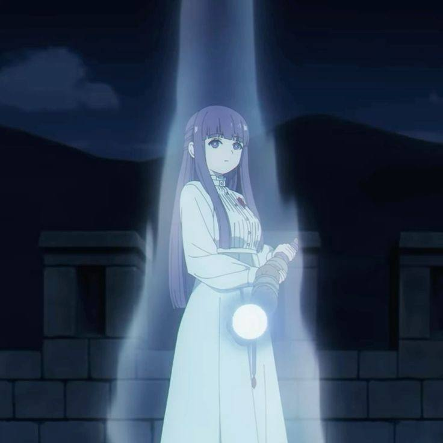
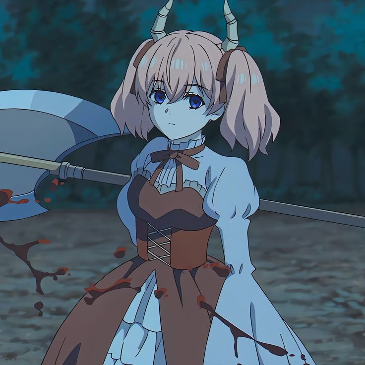

✿
— ✦ welcome to —
my little world ♡
Привет! Я lavdyxa. Здесь ты можешь узнать обо мне, посмотреть мои фото, послушать музыку и просто провести время. ♡
— ✦ welcome to —
Привет! Я lavdyxa. Здесь ты можешь узнать обо мне, посмотреть мои фото, послушать музыку и просто провести время. ♡

♡ little sakura world
Знаешь ли ты
Good things
take time... ♡
▣ Watching: Frieren
♫ Listening: Максим — Знаешь ли ты
● Status: Online ♡


✦ little anime corner
♡ немного обо мне
♡ Это мой личный уголок в интернете. Здесь я собираю то, что мне нравится, и просто создаю то, что хочется.
✦ Этот сайт сделан немного необычным специально для меня — можешь заглянуть в разные разделы и, возможно, найти что-нибудь скрытое.
✦ то, что я создаю
Бесит куча значков на рабочем столе? Это приложение позволяет буквально одной клавишей скрыть значки рабочего стола — и так же быстро вернуть их обратно.
Мой личный сайт в аниме-стиле — место, которое я постепенно создаю под себя.
HTML CSS JSМоё небольшое сообщество для общения, игр и новых знакомств.
Discord CommunityЗдесь со временем будут появляться новые эксперименты и маленькие проекты.
WIPаниме, которые мне нравятся
Одно из моих любимых аниме.
Тоже одно из моих любимых аниме.
Может быть, здесь скоро появится ещё одно.
моя любимая музыка
Нажми ▶, чтобы включить песню ♡
мои любимые картинки
♡ Эта аватарка досталась мне от бывшего интересного собеседника.
← → Переключай фотографии стрелками или клавишами на клавиатуре
♡ небольшие обновления
Если вас бесят ваши значки на рабочем столе, это приложение поможет убрать их буквально по нажатию одной клавиши. Нажмите на эту запись, чтобы скачать приложение и быстро скрывать или возвращать значки.
Сайт постепенно становится чем-то большим, чем просто профиль — это мой маленький уголок в интернете.
Когда что-нибудь новое будет готово, я обязательно добавлю это сюда.
где меня найти
Socials
Telegram
lavdyxa
Discord
lavdyxa
TikTok
lavdyxa